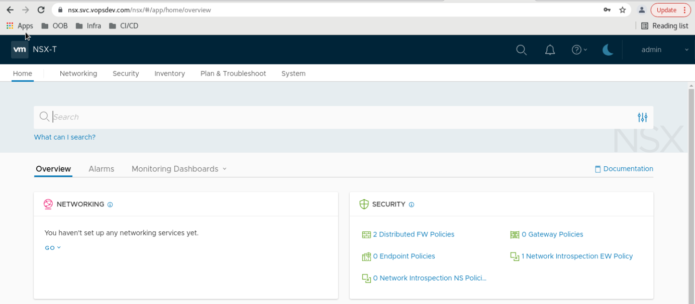

NSX-T 3: 命令行方式部署 NSX-T Manager 集群
使用命令行方式在 vSphere 平台部署 NSX-T 3.1 三节点集群
为什么使用命令行方式部署 NSX-T 集群
这是一个实验环境, 有反复创建/销毁的需求, 图形界面向导的方式略显繁琐. 为此考虑使用命令行的方式来部署:
- NSX-T Manager 将会被部署到单独的 Management vCenter 下, 而我并不想将 Management vCenter 添加到 NSX-T 的 Compute Managers 里
- 一旦第一次做成功以后, 后面重新部署只需要复制粘贴即可, 比 UI 方式快捷
准备配置模板
首先提取 ova 的 spec.json 1
2OVA="/mnt/driver/VMware/NSX-T_3.1/nsx-unified-appliance-3.1.2.0.0.17884005-le.ova"
govc import.spec $OVA > spec.json.tpl
根据环境的定制需求, 将 spec.json.tpl 中可变的字段使用变量替换: 1
2
3
4
5
6
7
8
9
10
11
12
13
14
15
16
17
18
19
20
21
22
23
24
25
26
27
28
29
30
31
32
33
34
35
36
37
38
39
40
41
42
43
44
45
46
47
48
49
50
51
52
53
54
55
56
57
58
59
60
61
62
63
64
65
66
67
68
69
70
71
72
73
74
75
76
77
78
79
80
81
82
83
84
85
86
87
88
89
90
91
92
93
94
95
96
97
98
99
100
101
102
103
104
105
106
107{
"Deployment": "small",
"DiskProvisioning": "thin",
"IPAllocationPolicy": "fixedPolicy",
"IPProtocol": "IPv4",
"PropertyMapping": [
{
"Key": "nsx_passwd_0",
"Value": "$NSX_PASSWORD"
},
{
"Key": "nsx_cli_passwd_0",
"Value": "$NSX_PASSWORD"
},
{
"Key": "nsx_cli_audit_passwd_0",
"Value": "$NSX_PASSWORD"
},
{
"Key": "nsx_cli_username",
"Value": "admin"
},
{
"Key": "nsx_cli_audit_username",
"Value": "audit"
},
{
"Key": "extraPara",
"Value": ""
},
{
"Key": "nsx_hostname",
"Value": "$NSX_HOSTNAME"
},
{
"Key": "nsx_role",
"Value": "NSX Manager"
},
{
"Key": "nsx_ip_0",
"Value": "$NSX_IP"
},
{
"Key": "nsx_netmask_0",
"Value": "$NETMASK"
},
{
"Key": "nsx_gateway_0",
"Value": "$GATEWAY"
},
{
"Key": "nsx_dns1_0",
"Value": "$DNS"
},
{
"Key": "nsx_domain_0",
"Value": "$DOMAIN"
},
{
"Key": "nsx_ntp_0",
"Value": "$NTP"
},
{
"Key": "nsx_isSSHEnabled",
"Value": "True"
},
{
"Key": "nsx_allowSSHRootLogin",
"Value": "True"
},
{
"Key": "nsx_swIntegrityCheck",
"Value": "False"
},
{
"Key": "mpIp",
"Value": ""
},
{
"Key": "mpToken",
"Value": ""
},
{
"Key": "mpThumbprint",
"Value": ""
},
{
"Key": "mpNodeId",
"Value": ""
},
{
"Key": "mpClusterId",
"Value": ""
}
],
"NetworkMapping": [
{
"Name": "Network 1",
"Network": "$NETWORK"
}
],
"MarkAsTemplate": false,
"PowerOn": true,
"InjectOvfEnv": false,
"WaitForIP": false,
"Name": null
}
使用 govc 部署 NSX-T 节点
将需要替换的变量 export 出来, 替换 spec.json.tpl 中的内容, 提供给 govc 来导入 ova 1
2
3
4
5
6
7
8
9
10
11
12
13
14
15
16
17
18
19
20
21
22
23
24
25
26
27
28
29
30
31
32
33
34OVA="/mnt/driver/VMware/NSX-T_3.1/nsx-unified-appliance-3.1.2.0.0.17884005-le.ova"
DC="HDC"
DS="NAS-Shared"
POOL="/HDC/host/Mars/Resources/Test"
VM_FOLDER="/HDC/vm/Lab/NSX-T"
export NETWORK="SG-SVC-11"
export NETMASK="255.255.255.0"
export GATEWAY="192.168.11.254"
export DOMAIN="int.vopsdev.com"
export DNS="192.168.11.10"
export NTP="1.ntp.svc.vopsdev.com,2.ntp.svc.vopsdev.com"
export NSX_PASSWORD='CHANGEME'
# the 1st one
export NSX_HOSTNAME="nsx-0"
export NSX_IP="192.168.11.30"
envsubst < spec.json.tpl > /tmp/spec.json
govc import.ova --options=/tmp/spec.json --name=$NSX_HOSTNAME -ds=$DS -dc=$DC -pool=$POOL -folder=$VM_FOLDER $OVA
# the 2nd one
export NSX_HOSTNAME="nsx-1"
export NSX_IP="192.168.11.31"
envsubst < spec.json.tpl > /tmp/spec.json
govc import.ova --options=/tmp/spec.json --name=$NSX_HOSTNAME -ds=$DS -dc=$DC -pool=$POOL -folder=$VM_FOLDER $OVA
# the 3rd one
export NSX_HOSTNAME="nsx-2"
export NSX_IP="192.168.11.32"
envsubst < spec.json.tpl > /tmp/spec.json
govc import.ova --options=/tmp/spec.json --name=$NSX_HOSTNAME -ds=$DS -dc=$DC -pool=$POOL -folder=$VM_FOLDER $OVA
节点加入集群
SSH 登入 nsx-0, 设置 cluster vip, 获取 cluster id 和 thumbprint 1
2
3set cluster vip 192.168.11.33
get cluster config
get certificate api thumbprint
如果获取 thumbprint 报错 % An error occurred while reading the API server certificate, 需要等一会儿再试
SSH 登入其他节点, 使用第一个节点上获取的 cluster id 和 thumbprint 加入集群 1
join 192.168.11.30 cluster-id 75fe7cbe-010b-4b11-879c-485380d4b2fd username admin password 'CHANGEME' thumbprint 924746f887524722e1caf02de69dec73c25284e7770b63cdbc3e619da99dd44e
一个节点加入后, 使用 get cluster status 检查集群状态. 直到 Overal Status 变成 STABLE 以后再加下一个.
最后测试通过 VIP 访问 NSX-T Manager UI: 